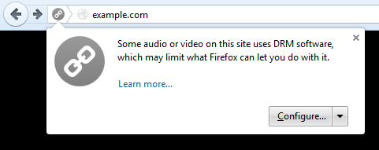

早在一年之前，我們就宣佈將著手開發 Firefox 中的元件，期能以 HTML5 的 video 標籤播放數位版權管理 (Digital Rights Management，DRM) 所包裹的內容。基於 Mozilla 的既有理念以及 DRM 的封閉本質，這項任務著實不易。在解釋過兩難境地之後，我們現正啟動 DRM 以提供使用者對瀏覽器所要求的功能，讓大家都能繼續欣賞精采的影片內容。我們不看好 DRM 能成為市場的解決方案，但卻是目前能觀看熱門內容的唯一方法。
Firefox 在今天整合了 Adobe 的「Content Decryption Module (內容解密模組，CDM)」，以能播放 DRM 所包裹的內容。只要你升級或安裝 Firefox 之後，隨即會從 Adobe 下載 CDM。在你第一次進入已使用 Adobe CDM 的網站之後，就會跟著啟動 CDM。包含 Netflix 在內的高階影片服務，都已經開始在 Firefox 中測試此解決方案。
由於 DRM 屬於不開放的「黑箱」技術，我們以 CDM 為基礎設計了「安全沙箱 (Security sandbox)」。我們不知道其他瀏覽器是如何處理黑箱問題，但可透過沙箱機制提供必要的安全隔層。此外，我們也提供該如何從自己 Firefox 移除 CDM 的方法。Mozilla 認為這些都是重要的安全與選擇機制，讓我們能在整合此類黑箱技術並將負面影響降到最低之餘，也能順利導入此項技術。

Mozilla 也知道並非所有人都喜歡 DRM。所以針對某些不想在自己瀏覽器上安裝 CDM 的使用者，我們提供另外的 Firefox 下載版本，其中已將 CDM 預設為停用。
如同之前所討論過的，DRM 算是複雜的問題。我們希望使用者能了解其所代表的意涵，所以將透過此教材介紹 DRM、其產生的挑戰，以及某些內容供應商仍決定採用的理由。